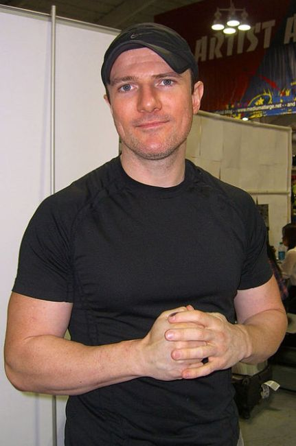
×
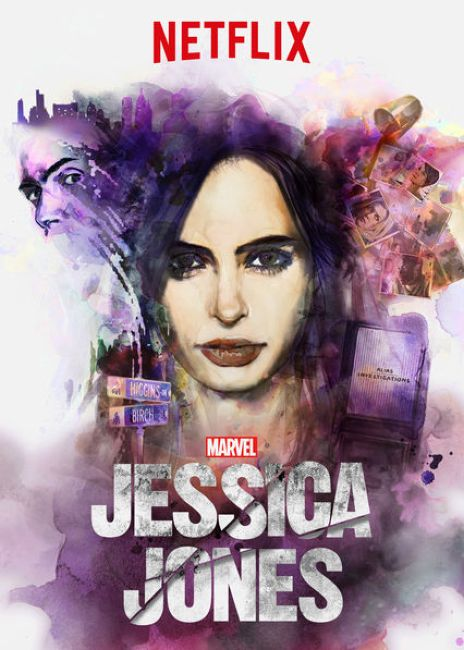
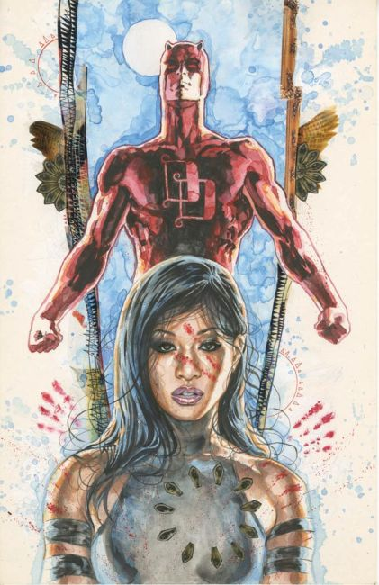
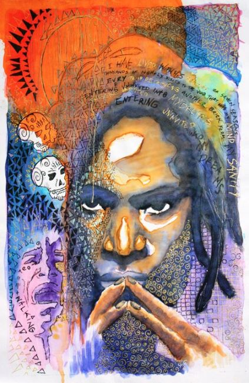
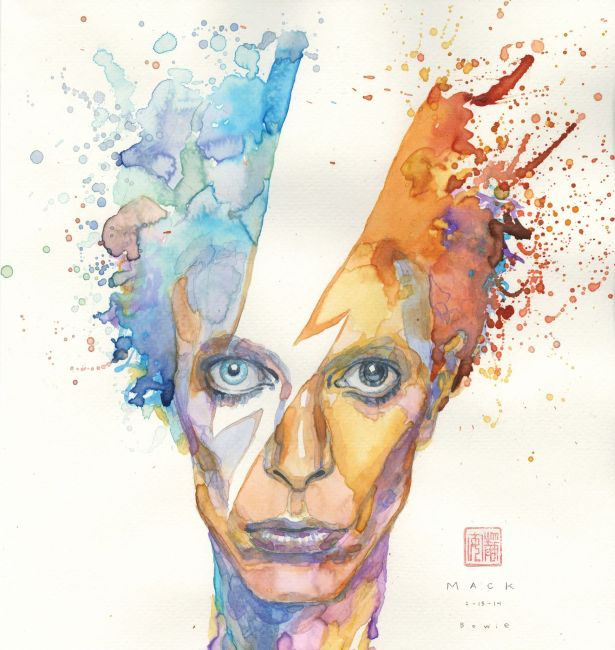
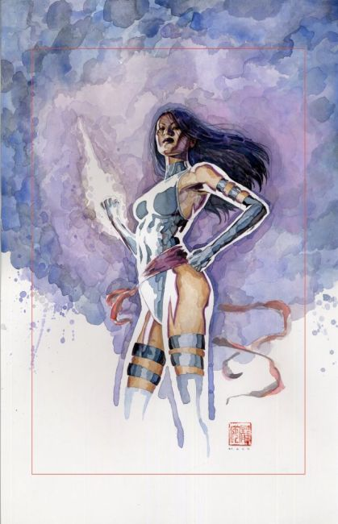
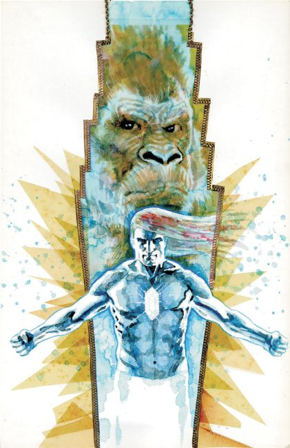
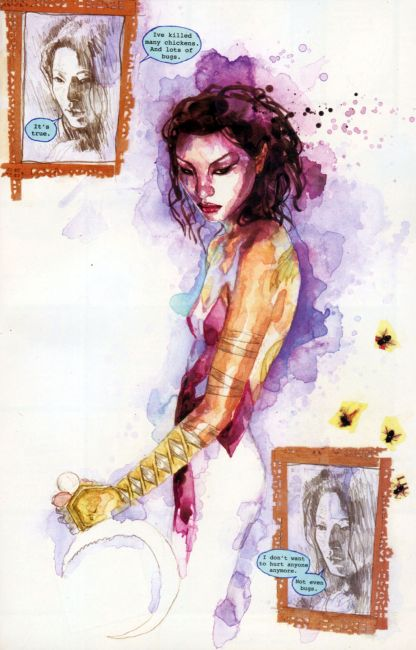
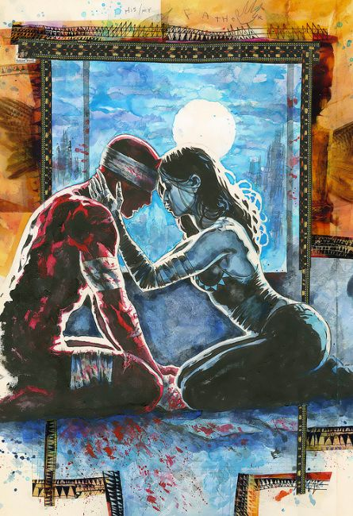
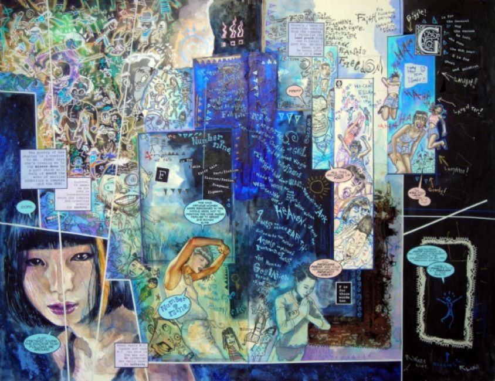
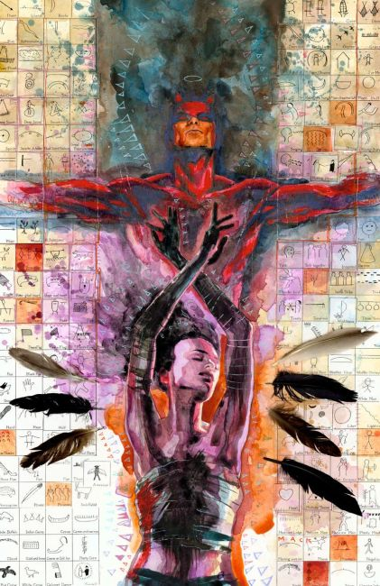
❮
❯
David W. Mack is an American comic book artist and writer, known for his creator-owned series Kabuki and for co-creating with Joe Quesada the deaf Marvel Comics superhero Echo. Mack is known for his unique painted and collage-like work.
Mack began publishing Kabuki in 1994 with Caliber Press, and later moved the series to Image Comics. It is now released through Marvel Comics' imprint Icon Comics. He completed the first book, Kabuki: Circle of Blood, while still in college. Mack has also worked on such Marvel Comics publications as Daredevil, Alias, New Avengers, and White Tiger.
Interior artwork
Daredevil, Vol. 2, #16–19, #50 (with writer Brian Bendis, 2000, 2003), #51–55
Daredevil: End of Days #3, #6, #8
Kabuki: Fear The Reaper – 1994
Kabuki: Circle of Blood (vol 1) #1–6
Kabuki: Dreams (vol 2) #1–4
Kabuki: Masks of the Noh (vol 3) #1–4
Kabuki: Skin Deep (vol 4) #1–4
Kabuki: Metamorphosis (vol 5) #1–9
Kabuki: The Alchemy (vol 7) #1–9
New Avengers #39 (with writer Brian Bendis, 2008)
Grendel: Black, White & Red (Dark Horse Comics)
Reflections #1–15 (Image Comics & Marvel Comics)
Dream Logic #1–4 (Marvel Comics)
Covers
Jessica Jones #1-18 (2016-2018)
Alias #1–28 (2001–2004)
Daredevil, Vol. 2, #9–25 (1999–2001)
Green Arrow, Vol. 3, #8 (2011)
Justice League of America, Vol. 2, #44–45, 51–53 (2010–2011)
Miss Marvel, Vol. 2, #6–8 (2007)
Swamp Thing, Vol. 3, #13–15 (2001)
Ultimate Marvel Team Up #15–16 (2002)
White Tiger #1–6 (2006)
The Realm, Vol. 2, #7 (1994)
American Gods (comic series), (2017-Present)
Shadows
My Ainsel
Writer
Daredevil, Vol. 2, #9–11, #13–15 (with artist Joe Quesada, David Ross, 1999–2000)
Daredevil Vol. 2 #51–55
Daredevil End of Days #1–8 (with Brian Michael Bendis)
Philip K. Dick's: Electric Ant #1–5 (with artist Pascil Alixe, 2010)
SE7EN
Kabuki: Fear The Reaper – 1994
Kabuki: Circle of Blood (vol 1) #1–6
Kabuki: Dreams (vol 2) #1–4
Kabuki: Masks of the Noh (vol 3) #1–4
Kabuki: Skin Deep (vol 4) #1–4
Kabuki: Metamorphosis (vol 5) #1–9
Kabuki: Scarab (vol 6) #1–8
Kabuki: The Alchemy (vol 7) #1–9
Writer/artist
Captain America: The Winter Soldier (2014) Main titles
Daredevil, Vol. 2, #51–55 (2003–2004)
Excerpted as "Vision Quest: Echo" in Moonshot: The Indigenous Comics Collective vol. 1, pp.12-21 (Alternate History Comics, 2015)
Dream Logic #1–4 (2010)
Kabuki #1–9 (1997)
Children's books
The Shy Creatures Feiwel & Friends (2007)